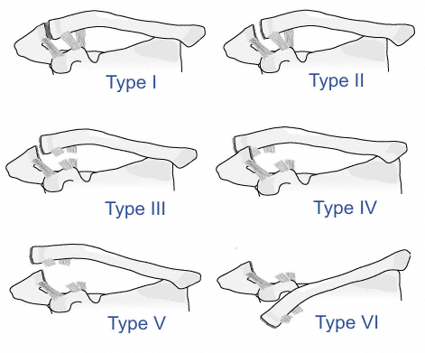

Classification
Rockwood
:
Type I
: sprain
Tenderness but radiographically normal
Type II
: AC ligaments disrupted, CC ligaments intact
AC joint may be widened (> 6 mm)
AP instability of joint
Type III
: AC and CC ligaments disrupted
Visible deformity, reducible with upward elbow pressure
AP and superior-inferior instability of joint
Widened AC and CC intervals
Type IV
: posterior displacement of the distal clavicle through deltotrapezial fascia
Prominence of clavicle over scapular spine
Clavicle posterior to acromion on axillary radiograph
Widened CC interval and dislocation of AC on AP radiograph
Type V
: wide CC separation, distal clavicle through deltotrapezial fascia
Visible deformity, nonreducible (buttonholed through deltotrapezial fascia)
Wide CC displacement
Type VI
: inferior displacement of distal clavicle under coracoid

Rockwood classification
OTA
: acromioclavicular (10-B)
Anterior (theoretical)
Posterior
Superior
Inferior
Other